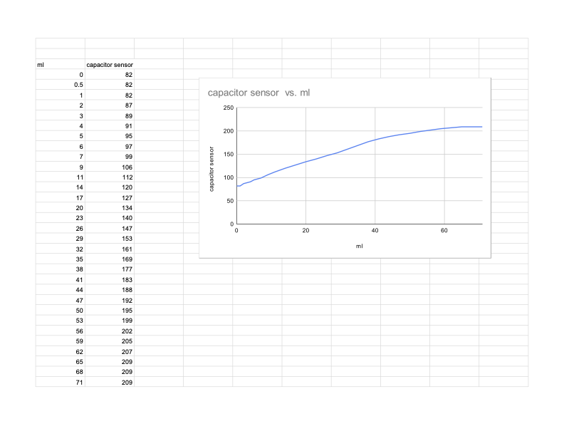
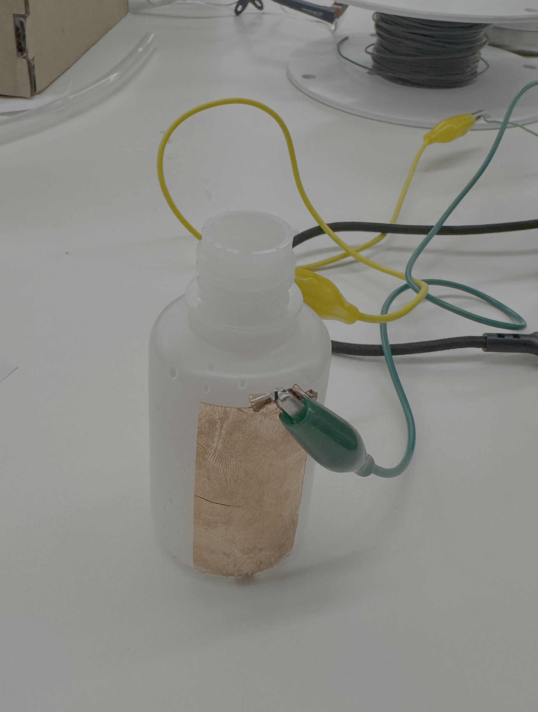

<div class="textcontainer">
<p class="margin"> </p>
<h3>Week 6: Electronic Inputs</h3>
<h4>Assignment 1: Capactive Sensor<h4>
<p style="color:black; font-size:18px;"> Our capacitance sensor measured water level. We taped copper onto either side of an empty plastic bottle and wired up each and got a baseline reading of 82. We then began adding water to the bottle in small increments. Once we added enough to reach to completely cover the bottom of the bottle, an increase in the capacitance started. Because water is a better conductor than air, as we added more water the capacitance increased. We kept adding water in increments of one to three ml until the capacitance stopped changing, which occured when the water level was above the top of the copper and the capacitance read 209. After this point, adding water had no effect as both pieces of copper had their full surface area already against water. <p>
<br>
<p></p>
<p></p>
<br>
<h4>Assignment 2: Distance Sensor</h4>
<p style="color:black; font-size:18px;"> This week I built a part of final project, which is a distance sensor. I soldered wires into a VL53LOX sensor, wrote some basic code for it to print out distance in the serial monitor and then I tested it. It worked well, so I then wired up an LED and coded it to blink faster as the distance between the sensor and an object got smaller. This ended up working perfectly and was kind of fun to play with. A photo of my circuit, a video of the distance readout, and a video of my LED in action are all included here. The code for my LED controlled distance sensor can also be downloaded below. <p>
<p class="margin"> </p>
<div class="flexrow">
<a id="btn" href="06_inputs/week6vl53lox/week6vl53lox.ino" download> View Code </a>
</div>
<p class="margin"> </p>
<img src="distanceledcircuit.png" alt="LED distance sensor" width="30%">
<div style="display: flex; gap: 10px;">
<video height="440" controls>
<source src="distanceoutput.mov" type="video/mp4">
</video>
<video height="440" controls>
<source src="blinkingled.MOV" type="video/mp4">
</video>
</div>